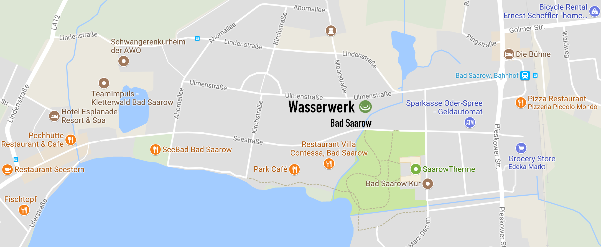

A lakeside hideaway, perfectly located for your convenience
The Wasserwerk is a luxurious lakeside hideaway experience, people with sharpened senses will notice all the intricacies in the design of these spaces. It is a renovated hydro power-plant, and all spaces have been transformed into spacious lofts or apartments. The residence also has a renovated water-tower in the court that guests can stay in. The complex has two lofts, two apartments, a tower suite, and the water tower. It is big enough for hosting events, like an evening talk by the fireplace, a birthday, corporate team-building events, and much more. There is free parking, free high speed Wi-Fi, and a friendly staff to get you what you need. For bookings and more information, click here
